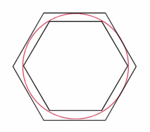

Pi: Paradise for number
lovers
A history of pi-ness:
2000
BC to 200 AD
After the Egyptians had inscribed and
discovered a rough value of Pi, the rest of the world either didn’t care or
didn’t get the information that Pi was equal to 256/81 because much of the
world was still using 3 to represent Pi.
In fact the only new calculation of Pi
from when the Egyptians discovered the value of 256/81 to when the Greeks
started calculating Pi, 2000 years later was by the Babylonians. The
Babylonians worked out Pi to be 3 and 1/8 by an unknown method. Everyone around
the world found their value of Pi to be adequate in till the Greeks came along.
The Greeks were obsessed with discovering
new mathematics, instead of asking ‘How much?’ they started asking ‘How come?’.
At the start of the Greeks great science
& mathematical escapade they only tried to square the circle. One of the
ways used to try and create a square with the same area as a circle was called
the exhaustion method developed by Antiphon and Bryson of Heraclea. This method
consisted of creating a square the same size of a circle, then turning that
square into a hexagon, then doubling the sides of the hexagon over and over.
Then eventually the hexagon would turn into a circle.
Two Hundred years later Archimedes came
along, the Scientist/Mathmatician/ Philsopher best known for discovering
buoyancy and then running down the street naked yelling ‘Eureka!’. He became
fascinated with the circle and discovering the true value of Pi. He used a
method based upon the method of Antiphon and Bryson and deduced that Pi was
greater than 3 10/71 but smaller than 3 1/7 (to see his method click here). He later published his finding in a paper
called ‘The Measurement of the Circle”.
A few years later Archimedes revised his paper and said that Pi equals 211875/67441
(or 3.1416…). Over the next 200 years there was very little done on Pi. The 2
new calculations that surfaced were Pi is equal to 3 + 8/60 + 30/3600 by
Ptolemy, and Pi is equal to 3 17/120 (or 3.1417…) by Claduis Ptolemy.
 Archimedes revised exhaustion method. To
find out more click here